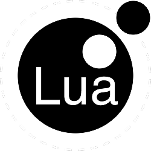
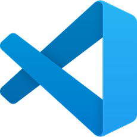
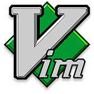
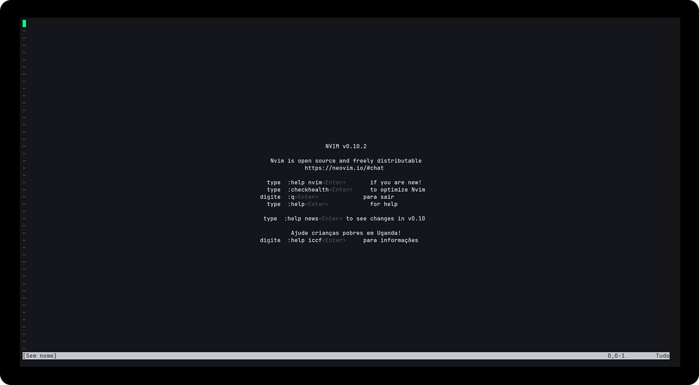
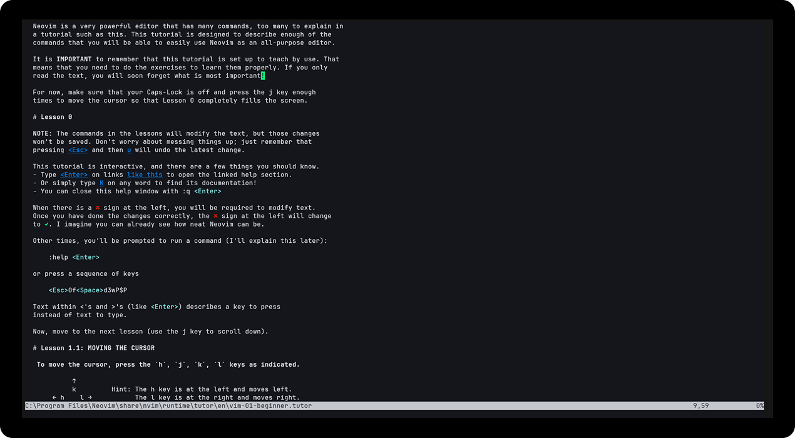

O Neovim é um editor de texto que roda no terminal, focado no uso do teclado e na personalização. Ele surgiu como uma evolução do Vim, derivado do Vi.
É leve, rápido e totalmente configurável, permitindo que cada usuário crie seu próprio ambiente de trabalho sem depender do mouse.
________ + ________
/VVVVVVVV\++++ /VVVVVVVV\
\VVVVVVVV/++++++\VVVVVVVV/
|VVVVVV|++++++++/VVVVV/'
|VVVVVV|++++++/VVVVV/'
+|VVVVVV|++++/VVVVV/'+
+++|VVVVVV|++/VVVVV/+++++
+++++|VVVVVV|/VVVVV/'+++++++++
+++|VVVVVVVVVVV/'+++++++++
+|VVVVVVVVV/'+++++++++
|VVVVVVV/'+++++++++
|VVVVV/'+++++++++
|VVV/'+++++++++
'V/' ++++++
++
Usar o Neovim é ideal para quem busca mais controle e eficiência. Ele permite trabalhar quase totalmente pelo teclado, tornando a edição de código mais rápida com o tempo. Além disso, é leve e altamente personalizável, utilizando Lua para suas configurações. Lua também é usada na plataforma Roblox e é conhecida por ser uma linguagem simples e fácil de aprender, o que facilita na hora de criar plugins, atalhos e adaptar o editor ao seu próprio estilo.

O Neovim é um editor de texto que roda no terminal, focado no uso do teclado e na personalização. Ele surgiu como uma evolução do Vim, derivado do Vi.
É leve, rápido e totalmente configurável, permitindo que cada usuário crie seu próprio ambiente de trabalho sem depender do mouse.


Para instalar o neovim no seu computador acesse o terminal e digite
Windows
Linux

Ao acessar o vim pela primeira vez ele terá essa aparência
Para sair do neovim é necessario acessar o modo de comando através da tecla “:”
O comando para sair do neovim é :q de ‘quit’

Aqui no tutorial você pode aprender todo o básico de neovim para você se movimentar pelo texto
Para criar a sua própria configuração do vim você deve criar um arquivo de configuração na sua pasta raiz do neovim
Para isso você deve acessar sua pasta raiz de configuração
Windows
Linux
Dentro da pasta raiz você deve criar um diretório com o nome ‘nvim’ com um arquivo de inicialização chamado ‘init.lua’
Para isso você deve acessar digitar o comando
Após esse comando o nvim será aberto dentro do arquivo de configuração que é feito na linguagem lua
Dentro desse arquivo você pode construir diversas configurações ou você pode importar de outras pessoas clonando o repositório da configuração de alguém através do GitHub
Dentro da pasta raiz delete o diretório ‘nvim’
Para isso você deve acessar sua pasta raiz
Windows
Linux
Após isso clone o repositório da minha configuração
ou
nesse caso lembre de renomear a pasta ‘kickstart.nvim’ para ‘nvim’
E pronto quando você abrir o neovim com ‘nvim’ seu setup será configurado sózinho!
Repositorios de configurações
Canais que me inspiram a usar o vim